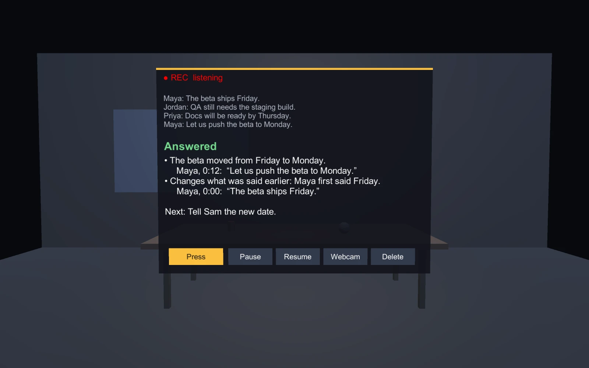

Smart glasses
A heads-up display for conversations
Glasses with a display in the lens are arriving. ContextLens is built for them: tap, and one short cited card appears in your view.
Simulated in Unity today · Builds for headsets like Meta Quest
Where it runs
- Today
Unity simulation
The client runs in Unity, which simulates the glasses view on your computer. The picture below is that render.
- Headsets
VR and mixed reality
Built on Unity’s XR toolkit, so it builds for headsets like Meta Quest. The card floats in the room in front of you.
- Next
Display glasses
Everyday glasses with a small display in the lens. The card is sized for that: one headline, one quote, one glance.
Made for a glance
Everything you need in one look, nothing to scroll.
- One headline
- Answered, partly answered, or not discussed yet.
- Who said it
- The quote, the speaker and when.
- Hands free
- A tap, or the button on a controller.
- Private
- Pause, resume and delete are always one tap away.

Same brain as the desktop app
The glasses show the card. Your computer does the listening and thinking.
Try it in Unity
Open the project, point it at your computer, and press Play.